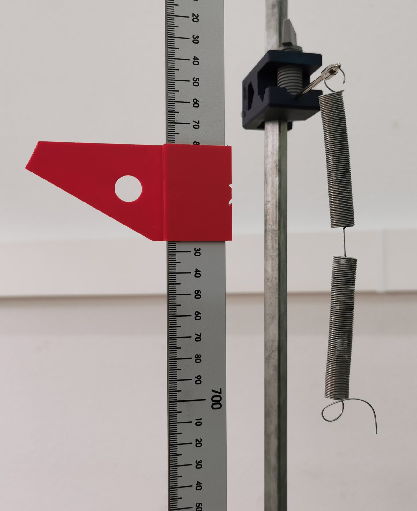

Movimiento armónico simple. Ley de Hooke
Prácticas de Laboratorio — UNED
2024-10-26
Determinación de la constante elástica K de un muelle por carga estática; ajuste lineal de pesos frente a elongaciones por mínimos cuadrados. Se obtiene también K por vía dinámica midiendo el periodo de oscilación de una masa suspendida y se discute la masa efectiva del muelle.
Objetivos
En esta práctica se estudia experimentalmente el movimiento periódico de una masa suspendida de un muelle. Se determinará la dependencia entre el período de oscilación y la masa suspendida, obteniéndose el valor de la constante elástica del muelle. Este resultado se comparará con el valor deducido de la ley de Hooke.
Material
- Soporte con muelle helicoidal vertical, portapesas y escala graduada en milímetros con índice.
- Juego de pesas (10 g, 20 g, 50 g…).
- Cronómetro digital (resolución 0.01 s).
- Balanza (resolución 0.1 g).
- Calibre y tornillo micrométrico (para las dimensiones del muelle).
Repaso de teoría
- Movimiento armónico simple.
- Ley de Hooke.
Fundamento teórico
Si una masa suspendida del extremo de un muelle se separa de su posición de equilibrio, y se deja libre, realizará un movimiento periódico, debido a que sobre la masa actúa una fuerza que tiende a llevarla a su posición de equilibrio. La fuerza depende de las propiedades elásticas del muelle, que para pequeñas oscilaciones, vienen descritas por la ley de Hooke: la aplicación de una fuerza F da lugar a una elongación x que es directamente proporcional a dicha fuerza:
F = -K\, x
donde x es la elongación respecto de la posición de equilibrio y el signo menos indica que la fuerza del muelle se opone a la deformación.
Para estudiar el movimiento oscilatorio de una masa suspendida de un muelle elástico ideal, se combinan la segunda ley de Newton y la ley de Hooke. De acuerdo a los resultados teóricos, la aceleración de la masa y el período de las oscilaciones vienen dados por:
a = - \dfrac{K}{M}\,x \hspace{2cm}T = 2\pi \,\sqrt{\dfrac{M}{K}}
Estas ecuaciones no describen exactamente el sistema muelle-masa ya que se ha ignorado la masa del muelle. Si la masa del muelle, m, estuviera concentrada en su extremo oscilante, lo único que habría que hacer es añadirla a la masa suspendida de él y poner como masa oscilante M+m. Sin embargo, la masa m se encuentra repartida en todo el muelle. La parte inferior del muelle oscila con una amplitud igual a la de la masa suspendida, M, pero la parte superior oscila con una amplitud más pequeña. Se puede tener en cuenta este efecto incluyendo una parte (\alpha m) de la masa del muelle en la masa oscilante. Así, en la ecuación anterior, la masa total será:
M + \alpha m \hspace{2cm}T = 2\pi \,\sqrt{\dfrac{M+\alpha m}{K}}
donde \alpha es un número menor que la unidad desconocido.
Si las pesas se colocan sobre un portapesas de masa m_0, también este oscila, y la masa total es M+m_0+\alpha m:
T^{2}=\frac{4\pi^{2}}{K}\,M+\frac{4\pi^{2}}{K}\left(m_0+\alpha m\right).
Pesad el portapesas y decid en el informe si vuestra M lo incluye. Si no lo incluye, la ordenada en el origen da m_0+\alpha m, y hay que restar m_0 antes de calcular \alpha m.
Descripción del aparato
Consta de un resorte vertical en forma de hélice que lleva un soporte en su extremo libre sobre el cual pueden colocarse diferentes masas (ver fig. adjunta). Adosado al resorte hay una escala vertical graduada en milímetros, la cual permite medir el alargamiento del muelle a través de la indicación sobre la escala de una flecha horizontal situada en el extremo libre del muelle.


Método operatorio
1
Determinar la constante K de un muelle, aplicando cargas sistemáticamente y midiendo su elongación.
Para ello rellenar una tabla similar a la que se indica a continuación y llevar los datos obtenidos a una gráfica de la elongación \Delta x (ordenadas) frente al peso P (abscisas). El ajuste por mínimos cuadrados supone que la variable de abscisas no tiene error apreciable, y aquí la que se lee con error (1 mm en la escala) es la elongación; las masas se conocen con mucha más precisión.
- Leed la escala con el ojo a la altura del índice (sin paralaje) y esperad a que el muelle esté quieto.
- Cargad de forma sistemática (de menor a mayor) y, al terminar, descargad leyendo de nuevo algunas posiciones: si no se recupera la lectura inicial, el muelle se ha deformado (se ha superado su límite elástico) y hay que repetir con menos carga.
- No superéis la carga máxima del muelle ni dejéis caer las pesas: un muelle sobrecargado queda inservible.
¡Cuidado con la unidades!, no mezclar sistemas de unidades diferentes.
Datos
experimentales
A continuación en la tabla se resumen los datos recogidos en el laboratorio.
| M\textrm{ (kg)} | P=Mg\textrm{ (N)} | \Delta x\textrm{ (m)} |
|---|---|---|
| 0.010 | 0.098 | 0.005 |
| 0.020 | 0.196 | 0.012 |
| 0.030 | 0.294 | 0.023 |
| 0.040 | 0.392 | 0.024 |
| 0.050 | 0.491 | 0.032 |
| 0.060 | 0.589 | 0.039 |
| 0.070 | 0.687 | 0.045 |
| 0.080 | 0.785 | 0.051 |
| 0.090 | 0.883 | 0.057 |
| 0.100 | 0.981 | 0.061 |
| 0.110 | 1.079 | 0.066 |
| 0.120 | 1.177 | 0.073 |
| 0.130 | 1.275 | 0.080 |
| 0.140 | 1.373 | 0.085 |
| 0.150 | 1.472 | 0.093 |
| 0.160 | 1.570 | 0.100 |
| 0.170 | 1.668 | 0.101 |
| 0.180 | 1.766 | 0.112 |
Nota: las masas están en kilogramos (en versiones anteriores la cabecera decía «g» por error) y los pesos se han calculado con g=9.81 m/s² sin redondearlos a la centésima de newton: para 10 g eso sería ya un error del 2 %. Calculad P=Mg con todas las cifras que justifican M y g.
Calcular la pendiente de la recta resultante mediante un ajuste por mínimos cuadrados. La pendiente es p=1/K, de modo que
K=\frac{1}{p},\qquad \Delta K=\frac{\Delta p}{p^{2}} .
Con los datos de la tabla, p=(0.0617\pm0.0008) m/N y K=(16.2\pm0.2) N/m.
Ordenada en el origen: no tiene por qué ser cero. Muchos muelles de laboratorio tienen las espiras juntas y una tensión inicial: hasta que la carga no la supera, el muelle apenas se alarga y los primeros puntos se separan de la recta (no los uséis en el ajuste, y decidlo). Además, el propio muelle se estira con su peso; en estática equivale a colgar la mitad de su masa en el extremo, lo que desplaza la recta pero no cambia su pendiente. Medid las elongaciones desde la posición con el portapesas puesto y comprobad si la ordenada es compatible con cero (con los datos de la tabla, (1.3\pm0.9) mm, compatible).
Representación gráfica: \Delta x vs P

2
Suspender una masa del muelle y calcular el período de sus oscilaciones midiendo el tiempo empleado para realizar un número determinado de oscilaciones, 20 por ejemplo. Repetir para todos los posibles valores de la masa (usad un método sistemático, de menor a mayor masa).
Separad el portapesas 1–2 cm hacia abajo y soltadlo sin impulso; si el muelle empieza a balancearse como un péndulo, paradlo y volved a empezar. Para las masas pequeñas el periodo es corto (unos 0.4 s con 30 g): contad 30 o 50 oscilaciones en lugar de 20, o usad la barrera fotoeléctrica si la hay, o el experimento Spring de phyphox con el móvil como masa oscilante para practicar en casa.
Haced una tabla, como la que se indica a continuación, del cuadrado del periodo, T^{2}, en función de M.
Llevar estos datos a una gráfica.
Comparar con las predicciones teóricas que indican que debe haber una relación lineal, ya que de la ecuación anterior (con M+\alpha m como masa oscilante) resulta:
T^{2} = 4\pi^{2}\,\dfrac{M}{K} + 4\pi^{2}\,\dfrac{\alpha m}{K}
Datos
experimentales
A continuación en la tabla se resumen los datos recogidos en el laboratorio.
| M\textrm{ (g)} | M\textrm{ (kg)} | t 20\textrm{ (s)} | T\textrm{ (s)} | T^{2}\textrm{ (s}^{2}\textrm{)} |
|---|---|---|---|---|
| 30 | 0.03 | 7.40 | 0.37 | 0.14 |
| 40 | 0.04 | 7.82 | 0.39 | 0.15 |
| 50 | 0.05 | 8.15 | 0.41 | 0.17 |
| 60 | 0.06 | 8.81 | 0.44 | 0.19 |
| 70 | 0.07 | 9.35 | 0.47 | 0.22 |
| 80 | 0.08 | 9.75 | 0.49 | 0.24 |
| 90 | 0.09 | 10.22 | 0.51 | 0.26 |
| 100 | 0.10 | 10.47 | 0.52 | 0.27 |
| 120 | 0.12 | 12.24 | 0.61 | 0.37 |
| 150 | 0.15 | 12.59 | 0.63 | 0.40 |
| 170 | 0.17 | 13.50 | 0.68 | 0.46 |
| 200 | 0.20 | 14.60 | 0.73 | 0.53 |
Mirad los residuos del ajuste: el punto de 120 g se separa de la recta mucho más que los demás. Antes de aceptarlo, comprobad la medida (¿20 oscilaciones o 21?). Un punto así se repite o se discute; no se esconde.
Apartado 3. Realizar el correspondiente ajuste mediante regresión lineal y, teniendo en cuenta la ecuación anterior, determinar la constante del muelle K, y su error \Delta K; y el valor de la constante \alpha m, y su error: \Delta(\alpha m).
Apartado 4. Comparar las constantes K obtenidas en los apartados 1 y 3.
Comentarios y cálculos sobre y en relación la ecuación anterior
Cuando se representa gráficamente el contenido de la ecuación anterior modificada, para que se aprecie mejor qué (T^{2}) se representa frente a qué (M):
T^{2} = 4\pi^{2}\,\dfrac{M}{K} + 4\pi^{2}\,\dfrac{\left(\alpha m\right)}{K} \Rightarrow T^{2} =\boxed{\dfrac{4\pi^{2}}{K}}\cdot M + \boxed{\dfrac{4\pi^{2}}{K}\cdot \left(\alpha m\right)}
La última expresión no es más que la ecuación de una línea recta, y = a\cdot x + b en la que
- la pendiente, a es: a=\dfrac{4\pi^{2}}{K}
- la ordenada en el origen, b es: b=\dfrac{4\pi^{2}}{K}\cdot \left(\alpha m\right)
Así, al ajustar la nube de puntos experimentales mediante una regresión lineal (y = a\cdot x + b, el problema matemático), se pueden obtener los valores de K y de \left(\alpha m\right), y sus correspondientes errores, por supuesto.
De la comparación, se deduce que a=\dfrac{4\pi^{2}}{K}, con lo que K es:
\boxed{K = \dfrac{4\pi^{2}}{a}}
Además, se puede trasladar el error de a, obtenido de la regresión lineal, \Delta a, teniendo en cuenta que en la expresión K es una función de una sola variable a. Eso significa que el error hay que calcularlo utilizando la siguiente expresión:
\Delta K = \sqrt{ \left|\frac{\textrm{d} K}{\textrm{d} a}\right|^{2} \cdot \left|\Delta a\right|^{2} } \Rightarrow \Delta K = \left|\frac{\textrm{d} K}{\textrm{d} a}\right|\cdot \left|\Delta a\right| \Rightarrow \boxed{\Delta K = \left|4\pi^{2}\cdot\dfrac{-1}{a^{2}}\right|\cdot \left|\Delta a\right|}
Finalmente, el valor de K que hay que entregar en el informe será:
\boxed{K = \dfrac{4\pi^{2}}{a} \pm \left|4\pi^{2}\cdot\dfrac{-1}{a^{2}}\right|\cdot \left|\Delta a\right|}
Con los datos de la tabla: a=(2.37\pm0.08)\ \mathrm{s^{2}/kg}, b=(0.054\pm0.009)\ \mathrm{s^{2}}, y por tanto K=(16.7\pm0.6)\ \mathrm{N/m} (versiones anteriores daban 16.66\pm0.54, con demasiadas cifras en el error).
Una vez obtenido K y su error, \Delta K, se puede obtener el valor de \left(\alpha m\right) y su error, \Delta \left(\alpha m\right) mediante el valor de la ordenada en el origen deducido de la regresión lineal. Para ello, lo único que hay que hacer es comparar, de nuevo, la ecuación física con la ecuación matemática:
y = a\cdot x + b \equiv \dfrac{4\pi^{2}}{K} \cdot M + \boxed{ \dfrac{4\pi^{2}}{K}\left(\alpha m\right) }
e igualar, como se ha indicado en el punto 2.: b = \dfrac{4\pi^{2}}{K}\left(\alpha m\right), con lo que \left(\alpha m\right) es:
\left(\alpha m\right) = \frac{b\cdot K}{4\pi^{2}} \Rightarrow \left(\alpha m\right) = b\cdot \frac{K}{4\pi^{2}}\Rightarrow \boxed{\left(\alpha m\right) = \frac{b}{a} }
Con los datos de la tabla, \left(\alpha m\right) \approx 0.0229\textrm{ kg}.
En este caso, \left(\alpha m\right) es función de dos variables: \left(\alpha m\right) = \left(\alpha m\right)(b,a); b la ordenada en el origen del problema matemático y a la pendiente del problema matemático. Entonces, la expresión para el error que hay que utilizar en este caso es la siguiente:
\Delta \left(\alpha m\right) = \sqrt{ \left|\left(\frac{\partial \left(\alpha m\right)}{\partial b}\right)_{a}\right|^{2} \cdot \left|\Delta b\right|^{2} + \left|\left(\frac{\partial \left(\alpha m\right)}{\partial a}\right)_{b}\right|^{2} \cdot \left|\Delta a\right|^{2} }
Entonces:
- \left(\frac{\partial \left(\alpha m\right)}{\partial b}\right)_{a} = \frac{1}{a}
- \left(\frac{\partial \left(\alpha m\right)}{\partial a}\right)_{b} = -\frac{b}{a^{2}}
Por lo tanto, el error en \left(\alpha m\right) es:
\Delta \left(\alpha m\right) = \sqrt{\frac{1}{a^{2}}\left(\Delta b\right)^{2} + \frac{b^{2}}{a^{4}}\left(\Delta a\right)^{2}}\Rightarrow \boxed{\Delta \left(\alpha m\right) = \frac{1}{a^{2}}\cdot \sqrt{ a^{2}\cdot\left(\Delta b\right)^{2} + b^{2}\cdot\left(\Delta a\right)^{2}} }
Finalmente, el valor de \left(\alpha m\right) que hay que entregar en el informe será:
\boxed{ \left(\alpha m\right) = \frac{b}{a} \pm \frac{1}{a^{2}}\cdot \sqrt{ a^{2}\cdot\left(\Delta b\right)^{2} + b^{2}\cdot\left(\Delta a\right)^{2}} }
Esta fórmula ignora la covarianza entre a y b, que salen del mismo ajuste (aquí su coeficiente de correlación es -0.88); incluyéndola, como hace el análisis resuelto, el error crece algo. Con los datos de la tabla:
\alpha m=\frac{b}{a}=(0.023\pm0.004)\ \mathrm{kg}=(23\pm4)\ \mathrm{g}.
(Al pasar de kilogramos a gramos se multiplican por 1000 el valor y el error. Versiones anteriores daban «2.29\pm0.01 g», una conversión errónea.)
Representación gráfica: T^{2} vs M

En un resorte uniforme, a partir de consideraciones energéticas, se puede deducir que el valor de \alpha debe ser de \frac{1}{3}.
Utilizando este valor teórico de \alpha, determinar la masa del muelle y su error a partir del valor experimental de \alpha m.
¿Es un valor razonable?
¿Es éste un buen método para calcular la masa del muelle?
Para contestar, tened en cuenta dos cosas. (1) El valor \alpha=1/3 se deduce suponiendo que el muelle se estira de manera uniforme y que la velocidad de cada espira crece linealmente desde el punto fijo; es buena aproximación cuando la masa colgada es mucho mayor que la del muelle, pero cuando son comparables \alpha aumenta hacia 4/\pi^{2}\approx0.41. (2) \alpha m sale de la ordenada en el origen, es decir, de extrapolar la recta hasta M=0, fuera del intervalo medido: su error relativo es grande (con los datos de la tabla, m=3\,\alpha m=(69\pm13) g, casi un 20 %). Como regla práctica, un error relativo mayor del 10 % indica que el método está limitado para ese propósito.
E. E. Rodríguez y G. A. Gesnouin, «Effective Mass of an Oscillating Spring», The Physics Teacher 45, 100–103 (2007), https://doi.org/10.1119/1.2432087.
Los autores cuelgan solo n de las N espiras de un muelle sin carga y miden el periodo T(n) y la constante k(n). Si la masa colgada es M(n)=n\,m_S/N y la constante es k(n)=C/n (un muelle es más rígido cuanto más corto), el modelo
T(n)=2\pi\sqrt{\frac{f\,M(n)}{k(n)}}=2\pi\sqrt{\frac{f\,m_S}{C\,N}}\;n=A\,n
predice una recta. De la pendiente C de k frente a 1/n y de la pendiente A de T frente a n obtienen f=\dfrac{A^{2}\,C\,N}{4\pi^{2}\,m_S}\approx0.42–0.43 para muelles metálicos y de plástico, más cerca de 4/\pi^{2}\approx0.41 (muelle sin carga) que de 1/3 (muelle con una carga grande). Para el muelle n.º 1 del artículo, m_S=111.4 g y N=99 espiras.
Leed el artículo (está disponible a través de la biblioteca de la UNED) y pensad cómo se podría repetir con vuestro muelle.
Artículos relacionados:
- E. E. Galloni y M. Kohen, «Influence of the mass of the spring on its static and dynamic effects», Am. J. Phys. 47, 1076–1078 (1979). https://doi.org/10.1119/1.11978
- F. A. Fox y J. Mahanty, «The Effective Mass of an Oscillating Spring», Am. J. Phys. 38, 98–100 (1970). https://doi.org/10.1119/1.1976240
- J. Greene, A. Gill y S. Eyerly, «Finding the Effective Mass and Spring Constant of a Force Probe from Simple Harmonic Motion», The Physics Teacher 54, 138–141 (2016). https://doi.org/10.1119/1.4942130
Los datos de la figura 3 del artículo (digitalizada) se han representado en la siguiente figura, en la que también se muestran los valores de la pendiente y de la ordenada en el origen, tras ajustarlos mediante una regresión lineal. La pendiente es la constante C del modelo k(n)=C/n: C=(41.7\pm0.2) N/m (el artículo da 41.7 N/m). Atención: en el eje vertical de la figura debe leerse K (N/m), no (N·m). (Una versión anterior de esta página incluía aquí una tabla que repetía por error los valores de la figura 4.)

Figura 3 del artículo, digitalizada.
Los datos de la figura 4 del artículo (digitalizada), están recogidos en la siguiente tabla y se han representado en la siguiente figura, en la que también se muestran los valores de la pendiente y de la ordenada en el origen, tras ajustarlos mediante una regresión lineal:
| n | T \textrm{ (s)} |
|---|---|
| 20 | 0.44 |
| 30 | 0.66 |
| 40 | 0.89 |
| 50 | 1.10 |
| 60 | 1.35 |
| 70 | 1.55 |
| 80 | 1.76 |
| 90 | 1.96 |

Figura 4 del artículo, digitalizada.
Ejercicio: con A=(0.0218\pm0.0002) s (figura 4), C=(41.7\pm0.2) N/m (figura 3), N=99 y m_S=111.4 g, calculad f y su error. ¿Es compatible con 4/\pi^{2}? ¿Y con 1/3?
6
Para determinar mejor si el valor obtenido de la masa del muelle es razonable vamos a realizar un cálculo de la masa del muelle a partir de su densidad y de su volumen.
Para ello se considera que la densidad del hierro es \approx 8.0\pm0.2\frac{\textrm{g}}{\textrm{cm}^{3}} y se determina el volumen del muelle midiendo sus dimensiones con el calibre micrométrico.
El volumen del muelle es el del alambre: un cilindro de diámetro d (alambre) y longitud igual a la de la hélice. Si el muelle tiene N espiras de diámetro medio D (diámetro exterior menos d),
V\simeq\frac{\pi d^{2}}{4}\,N\,\pi D=\frac{\pi^{2}}{4}\,N\,D\,d^{2},\qquad \frac{\Delta V}{V}=\sqrt{\left(\frac{\Delta D}{D}\right)^{2}+\left(\frac{2\,\Delta d}{d}\right)^{2}} .
Medid d con el tornillo micrométrico (0.01 mm) en varios puntos, D con el calibre (0.05 mm), y contad las espiras dos veces. Como d entra al cuadrado y es pequeño, su error domina. No contéis los ganchos de los extremos, o estimad su longitud aparte.
- Comparar con el resultado obtenido al pesar directamente el muelle en la balanza.
- (Apartado 7) Comparar los valores de masa del muelle de los apartados 5 y 6.
En el apartado 1, hay que representar gráficamente las elongaciones frente a los pesos. Utilizando la ley de Hooke y sabiendo que en este caso la fuerza es el peso, ¿cuál será la pendiente de la gráfica? ¿y cuál la ordenada en el origen?
Para realizar los apartados 2 y 3 del método operatorio hay que representar gráficamente T^{2} en función de M, según la teoría la relación entre ambas magnitudes es lineal, pero ¿cuál será la pendiente? ¿y cuál la ordenada en el origen?
Determinar explícitamente las expresiones de \Delta K y \Delta m en función de los errores en la pendiente y en la ordenada en el origen del ajuste por mínimos cuadrados que hay que realizar en el apartado 3 del método operatorio.
Determinar la fórmula para obtener el volumen de un muelle sabiendo el número de espiras, el diámetro del alambre y el diámetro de cada espira. Determinar también la fórmula para obtener el error en el volumen.
Indicación: el volumen del muelle es igual al volumen del alambre del que está hecho el muelle. La forma geométrica de un alambre es un cilindro.
- Un muelle tiene K\approx16 N/m y una masa de unos 70 g. Estimad el periodo para M=30 g y para M=200 g (con \alpha=1/3). ¿Cuánto dura una tanda de 20 oscilaciones en cada caso? Si vuestro tiempo de reacción es de 0.2 s, ¿qué error relativo tendrá T en cada caso? ¿Qué número de oscilaciones elegiríais?
Referencias
- P. A. Tipler y G. Mosca, Física para la ciencia y la tecnología, Vol. 1, 6.ª ed., Reverté, Barcelona, 2010. Cap. 14: Oscilaciones.
- R. A. Serway y J. W. Jewett, Física para ciencias e ingeniería, Vol. 1, 9.ª ed., Cengage Learning, México, 2014. Cap. 15: Movimiento oscilatorio.
- F. W. Sears, M. W. Zemansky, H. D. Young y R. A. Freedman, Física Universitaria, Vol. 1, 13.ª ed., Pearson Educación, México, 2013.
- E. E. Rodríguez y G. A. Gesnouin, «Effective Mass of an Oscillating Spring», The Physics Teacher 45, 100–103 (2007). https://doi.org/10.1119/1.2432087
- E. E. Galloni y M. Kohen, «Influence of the mass of the spring on its static and dynamic effects», Am. J. Phys. 47, 1076–1078 (1979). https://doi.org/10.1119/1.11978
- J. Christensen, «An improved calculation of the mass for the resonant spring pendulum», Am. J. Phys. 72, 818–828 (2004). https://doi.org/10.1119/1.1677269
- L. Ruby, «Equivalent mass of a coil spring», The Physics Teacher 38, 140–141 (2000). https://doi.org/10.1119/1.880475
- F. A. Fox y J. Mahanty, «The Effective Mass of an Oscillating Spring», Am. J. Phys. 38, 98–100 (1970). https://doi.org/10.1119/1.1976240
- J. R. Taylor, An Introduction to Error Analysis, 2.ª ed., University Science Books, Sausalito, 1997. Cap. 8 (ajuste por mínimos cuadrados). https://ui.adsabs.harvard.edu/abs/1997ieas.book.....T/abstract
- PhET, Masas y resortes y Ley de Hooke (simulaciones). https://phet.colorado.edu/en/simulations/masses-and-springs, https://phet.colorado.edu/en/simulations/hookes-law
- W. Fendt, Muelle oscilante (simulación). https://www.walter-fendt.de/html5/phes/springpendulum_es.htm
- phyphox, experimento Spring (acelerómetro del móvil). https://phyphox.org/experiment/spring/